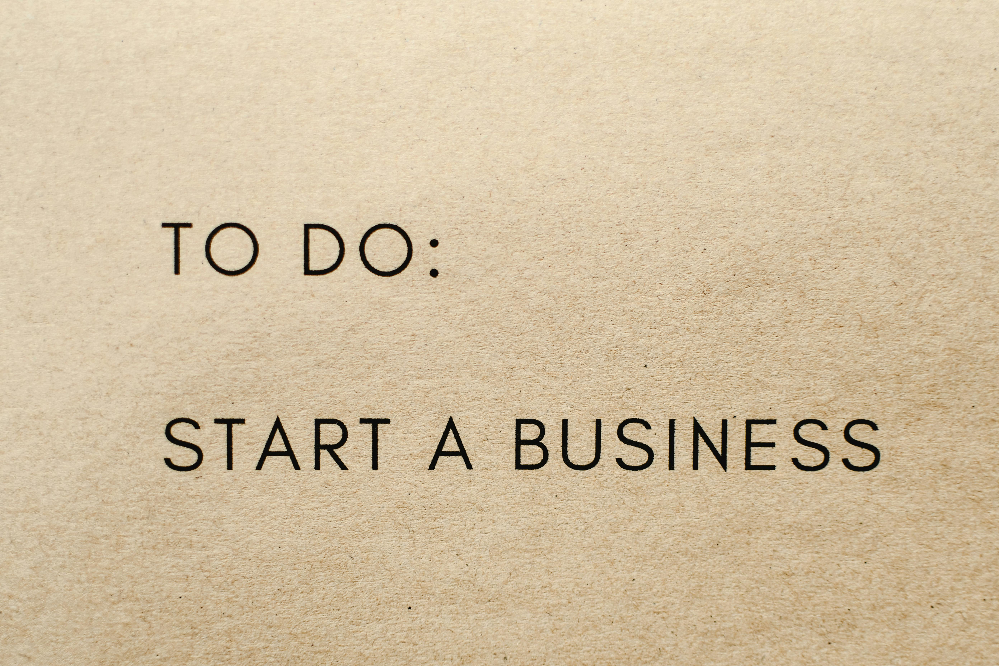

Why Choose TodoApp?

Organize Tasks Effortlessly
Quickly create, update, and track your tasks. Categorize them by priority, due date, or project.

Smart Reminders
Never miss a deadline again with smart reminders and real-time notifications.

Access Anywhere
Manage your tasks on desktop, tablet, or phone — TodoApp is always with you.